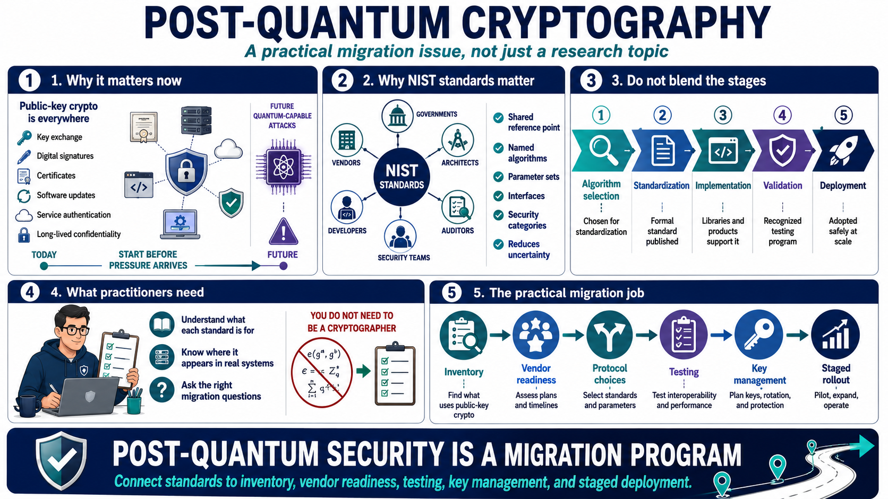

Why NIST PQC Standards Matter
Connecting to LMS... Progress: in progress

Narration
Post-quantum cryptography is not only a research topic. It is a practical migration issue for any organization that relies on public-key cryptography for key exchange, digital signatures, certificates, software updates, service authentication, or long-lived confidentiality. Quantum-capable attacks are not something most security teams can observe directly today, but migration work has to start before systems are already under pressure.
NIST standards matter because they give vendors, governments, architects, developers, auditors, and security teams a shared reference point. Without standards, every organization would have to interpret the algorithm landscape on its own. Standards reduce uncertainty by naming the algorithms, parameter sets, interfaces, and expected security categories that can be used as the basis for products and migration planning.
It helps to separate several stages that are often blended together. Algorithm selection means NIST has chosen an algorithm family for standardization. Standardization means the formal standard has been published. Implementation means libraries and products actually support it. Validation means an implementation can be tested through recognized programs. Deployment means real systems have adopted it safely, interoperably, and at scale.
Security practitioners do not need to become cryptographers to use the standards well. They do need to understand what each standard is for, where it may appear in real systems, and what migration questions it raises. The practical job is to connect standards to inventory, vendor readiness, protocol choices, testing, key management, and staged rollout.